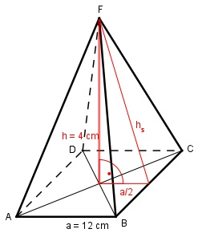

Aufgabe 184 Eine quadratische Pyramide hat eine Höhe h von 4 cm und eine Grundseite a von 12 cm. Wie groß ist ihre Oberfläche O?  Satz von Pythagoras im roten Dreieck: hs² = h² + (a/2)² hs² = 4² cm² + 6² cm² hs² = 52 cm² |√ hs = 7,2 cm Oberfläche O = Grundfläche G + Mantelfläche M (4 * Seitenfläche) O = G + M a * hs 12 cm * 7,2 cm O = a² + 4 * --------- = 12² cm² + 4 * ------------------ 2 2 O = 12² cm² + 2 * 12 cm * 7,2 cm O = 144 cm² + 172,4 cm² = 316,8 cm²